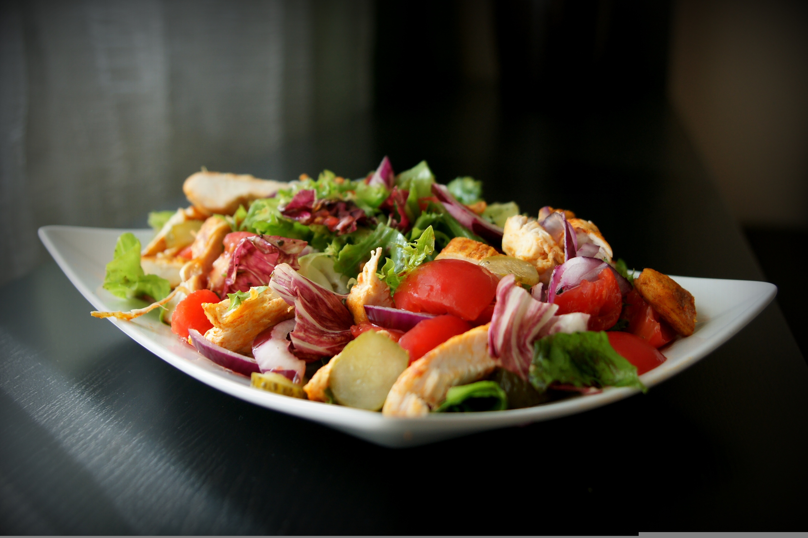
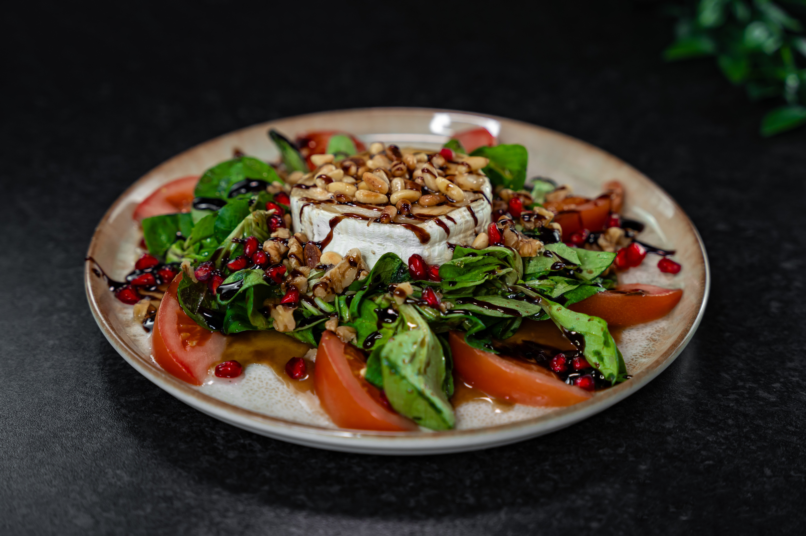

Ensaladas frescas y llenas de sabor
Combinaciones ligeras y equilibradas que destacan por su frescura y variedad de ingredientes

Ingredientes naturales
La base de nuestras ensaladas son productos frescos y de temporada. Verduras crujientes, frutas seleccionadas y complementos cuidadosamente elegidos crean combinaciones llenas de color y sabor.
Trabajamos con ingredientes de proximidad siempre que es posible, garantizando así la máxima frescura. Este enfoque nos permite ofrecer platos más naturales y respetuosos con el producto.
Cada ensalada está diseñada para resaltar la calidad de sus ingredientes sin necesidad de elaboraciones complejas.
Variedad y equilibrio
Nuestras ensaladas combinan diferentes texturas y sabores para lograr platos completos y equilibrados. Incorporamos ingredientes como quesos, frutos secos o proteínas que aportan riqueza y valor nutricional.
Cada receta está pensada para ofrecer una experiencia completa, donde lo ligero no está reñido con lo sabroso. El equilibrio entre lo fresco, lo crujiente y lo cremoso es clave en cada elaboración.
Así conseguimos ensaladas que no solo acompañan, sino que también pueden convertirse en el plato principal.


Ligereza y bienestar
Las ensaladas son una opción ideal para quienes buscan una alimentación equilibrada sin renunciar al sabor. Son platos que aportan frescura y energía, perfectos para cualquier época del año.
En Gastro apostamos por preparaciones ligeras que cuidan el producto y mantienen sus propiedades naturales. Cada ensalada está pensada para ofrecer una alternativa saludable y deliciosa.
Disfrutar de una buena ensalada es disfrutar de la sencillez, el equilibrio y la calidad en cada bocado.